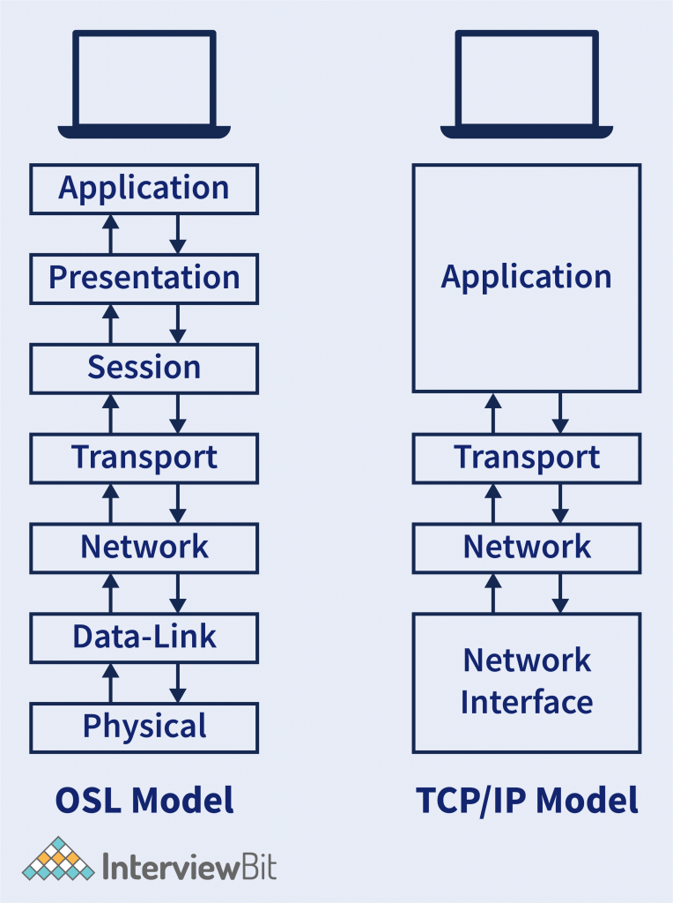

PROTOCOLO TCP/IP
Definición
El TCP/IP (Transmission Control Protocol/Internet Protocol) es el conjunto de protocolos fundamentales para la comunicación en redes de computadoras, incluyendo internet. Desarrollado en la década de 1970, es una arquitectura abierta que permite la interoperabilidad entre diferentes dispositivos y redes. TCP/IP define cómo los datos se dividen, transmiten, enrutados y recibidos en una red.
Capas de TCP/IP
TCP/IP está compuesto por cuatro capas que funcionan de manera jerárquica:
- Capa de enlace: Define cómo los datos se transmiten físicamente a través de un medio, como cables o señales inalámbricas. Aquí, protocolos como Ethernet o Wi-Fi son responsables de esta transmisión.
- Capa de Internet: Es responsable de la transmisión de paquetes de datos entre redes. El protocolo principal aquí es el IP (Internet Protocol), que maneja la dirección de los paquetes (usando direcciones IP) y su enrutamiento hacia el destino.
-
Capa de transporte: Gestiona el control del flujo de los
datos entre los dispositivos finales. Aquí actúan dos protocolos
clave:
- TCP (Transmission Control Protocol): Proporciona una transmisión más rápida pero no garantiza la entrega ni el orden de los paquetes, por lo que se usa en aplicaciones donde la velocidad es más importante que la fiabilidad (como transmisión de video en vivo).
- UDP (User Datagram Protocol): Garantiza una transmisión fiable, asegurándose de que los paquetes lleguen en el orden correcto y sin errores.
-
Capa de aplicación: Proporciona servicios de red a las
aplicaciones, como el acceso a páginas web, correos electrónicos,
y otros servicios. Algunos protocolos en esta capa son:
- HTTP (Hypertext Transfer Protocol): Para la transmisión de páginas web.
- FTP (File Transfer Protocol): Para la transferencia de archivos.
- SMTP (Simple Mail Transfer Protocol): Para el envío de correos electrónicos.
Ejemplos de funcionamiento de TCP/IP
- Navegación web: Cuando ingresas una URL en tu navegador, el protocolo HTTP en la capa de aplicación solicita una página web al servidor. Este mensaje es empaquetado por TCP, que lo divide en segmentos, los cuales son transmitidos a través de Internet por el protocolo IP, que se asegura de que los segmentos lleguen al servidor correcto. El servidor responde de manera similar, y el TCP del lado del cliente reordena los segmentos en el orden correcto para que la página web se muestre correctamente.
- Streaming de video: Aplicaciones como YouTube utilizan el protocolo UDP en lugar de TCP, porque es más rápido y la pérdida de algunos paquetes no afecta la experiencia general de visualización. El video es transmitido como una serie de pequeños paquetes, que se entregan sin la necesidad de confirmar si todos han llegado correctamente.
-
Correo electrónico (SMTP y POP/IMAP): Envío y recepción de
correos electrónicos entre dos usuarios utilizando un cliente de
correo como Outlook o Gmail.
Funcionamiento:
- Capa de aplicación (SMTP/IMAP): Cuando envías un correo, el cliente utiliza el protocolo SMTP (Simple Mail Transfer Protocol) para transferir el mensaje al servidor de correo del destinatario. Si recibes un correo, se utiliza POP (Post Office Protocol) o IMAP (Internet Message Access Protocol) para recuperar el mensaje del servidor.
- Capa de transporte (TCP): Se utiliza TCP para asegurar que los mensajes se entreguen correctamente, reintentando si hay errores en la transmisión.
- Capa de Internet (IP): IP enruta los paquetes de datos que contienen el correo hacia el servidor de destino utilizando direcciones IP.
- Capa de enlace: Los paquetes se transmiten físicamente a través de la red hasta que llegan al servidor del destinatario o al cliente de correo que los recibe
Conclusiones
1. Versatilidad y adaptabilidad
El protocolo TCP/IP ha demostrado ser altamente adaptable, permitiendo su uso en una amplia variedad de redes y dispositivos. Desde pequeñas redes locales hasta la vasta infraestructura de Internet, TCP/IP proporciona un marco común que facilita la interoperabilidad entre sistemas heterogéneos. Esto lo convierte en un estándar universal, adoptado no solo en internet, sino en redes privadas, centros de datos, y comunicaciones móviles.
2.Modularidad y flexibilidad
Una de las grandes fortalezas de TCP/IP es su arquitectura modular. Cada una de sus capas tiene funciones bien definidas, lo que permite que los desarrolladores y administradores puedan centrarse en una capa en particular sin afectar las demás. Esta separación de responsabilidades facilita la evolución de tecnologías sin necesidad de rediseñar completamente el sistema. Por ejemplo, el uso de TCP para aplicaciones donde la fiabilidad es primordial y UDP donde la velocidad es más crítica, muestra cómo el sistema puede ajustarse a diferentes necesidades.
3. Seguridad en TCP/IP
Aunque originalmente el diseño de TCP/IP no incluía fuertes mecanismos de seguridad, con el tiempo se han desarrollado protocolos adicionales para proteger la transmisión de datos, como HTTPS para la navegación web segura y VPN para el cifrado de comunicaciones a nivel de red. Esto resalta la flexibilidad del modelo, que ha podido integrar la seguridad sin alterar su estructura fundamental.
4. Velocidad vs. fiabilidad
La posibilidad de elegir entre TCP y UDP permite a los desarrolladores tomar decisiones informadas según las necesidades de sus aplicaciones. Mientras que TCP prioriza la fiabilidad, UDP sacrifica algunas características de control para proporcionar una transmisión más rápida y ligera. Esto ha sido fundamental en la creación de aplicaciones como los videojuegos en línea, streaming de video y videoconferencias, donde la velocidad es más importante que la transmisión perfecta de cada paquete.
TCP/IP no solo es la columna vertebral de internet, sino también un conjunto de protocolos que ha permitido la conectividad global de dispositivos y sistemas. Su diseño modular, flexibilidad, fiabilidad, y capacidad de escalar han sido clave para su durabilidad y expansión. A pesar de sus limitaciones, sigue siendo el pilar central de las comunicaciones digitales, y su relevancia continuará mientras las redes sigan creciendo y evolucionando.
AUTOR DEL ARTÍCULO
 Alejandro Caicedo
Alejandro Caicedo